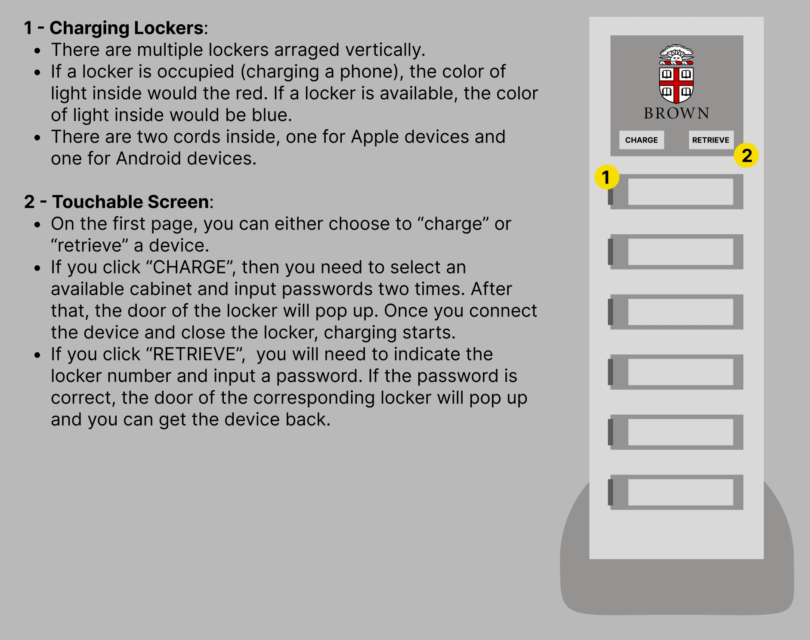
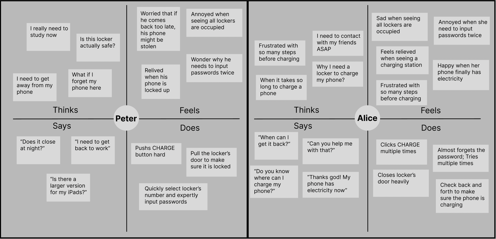
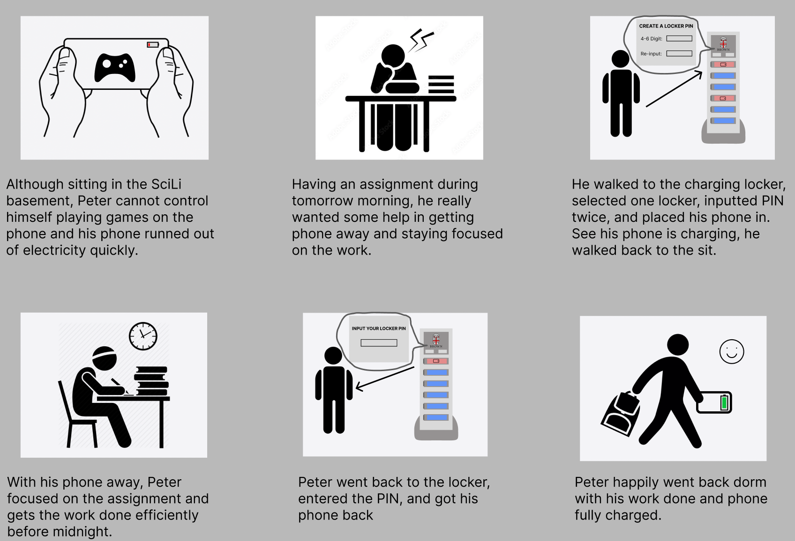

Part 1
- Select an accessible interface: Device Charging Station (at SciLi
basement)
- Prepare some questions for users regarding their experiences with the interface.
- What is your profession? Are you a student or faculty?
- Have you used it before? If so, how frequently do you use it?
- What devices are you going to charge? For how long?
- For how long would you put your device here?
- Throughout your experience, from charging to retrieving, what are some obstacles you face?
- Create a sketch and write a brief description of the interface:

Part 2
I observed four people using the station. Here are my key observations:
- Most people can easily follow the instruction to charge and retrieve their phones. The average time to lock
a
phone is 40 seconds and the average time to retrieve a phone is 18 seconds.
- The first thing that half of the people touch on the machine is not the “CHARGE” or “RETRIEVE” button.
Instead,
they click the big logo in the middle, which is not interactable.
- People prefer lockers on the top where they don’t need to bend to reach.
- One person spent almost 1 minute opening a locker but just charged for 2 minutes before retrieving it.
- The cable in the 3rd locker is broken. One student tried connecting his device to the broken cable multiple
times, but the machine kept showing him that no device was connected. Finally, he clicks cancel and switches
to
the 4th locker, which works well.
Here is the summary of responses to my questions.
- All of them are students, and all of them come here to charge their phones.
- Of the four people, 2 used it the first time. And one of the first-time users came here because the front
desk
told me it was the only place in SciLi he could charge his phone.
- There are three reasons why people use the station instead of their personal cables.
- Two people lost their cable at home
- One person’s cable is broken
- One person locks his phone to get it away, so he can focus on doing assignments.
- One person plans to charge his phone for more than 30 minutes. 2 people plan to charge their phones between
5 -
30 minutes. One person intends to retrieve it as soon as he can turn on the phone.
- All of them are satisfied with their experience, except the one who first puts his phone into the third
locker
with a broken cable. They generally believe the instruction on screen is intuitive. Their biggest concern is
forgetting the password they created when putting the phone into the locker.
Part 3

Peter:
- Junior at Brown has used this locker multiple times to help him get away from the phone and focus on
assignments.
- When using the interface, he is unsure whether the locker is safe and how long he could store it. Also, he
is
worried about forgetting his password.
- This persona represents some of the regular users who use the locker not only to charge their phones but
also to
get away from the phone and focus. Peter represents this use case by worrying about what might go wrong if
he
stores the phone for too long.
Alice:
- First-year students at Brown use this lock for the first time because she ran the phone’s electricity and
forgot
her cable at home.
- When using the interface, she is unsure of where to start with. Also, she is frustrated when the station
requires passwords twice because she is short on time.
- The persona represents a group of users who use the station more like a charger than a locker. They will
generally charge their phones for less than 15 minutes because they did not bring their cable. Alice
represents
the use case by focusing on getting charging started as soon as possible.
Part 4
